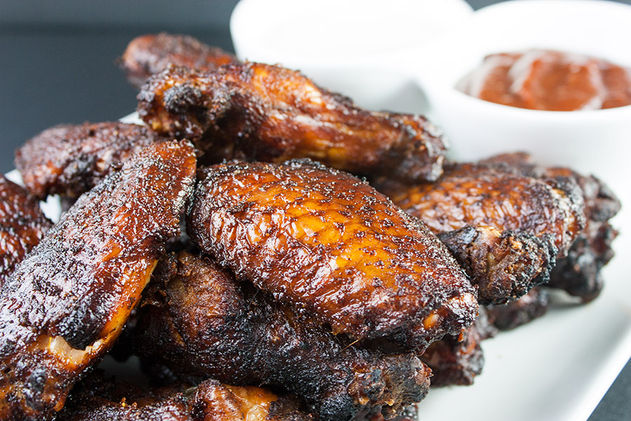

Smoked Chicken Wings

Ingredients
- 6 pounds chicken wings
- Your favorite bbq rub
- Olive Oil
Directions
- Separate wings into drumettes and wings, if necessary.
- Pat wings dry
- Place wings in a container, add olive and rub over chicken.
- Let wings rest for at least an hour.
- Heat smoker to a temperature between 225-250 F.
- Place wings over indirect heat.
- Add wood for the smoke
- Smoker for 2 - 2 1/2 hours, maintaining a constant smoker for at least 1 1/2 hours, the chicken should have an internal temperature of 160.
- Place directly on grill to crisp, about 5 minutes per side.
- Let rest for 10 minutes, sauce and serve.
Credit
Home